Costing
一般：SOLIDWORKS 成本计算工具通过将成本估算和报价过程自动化，帮助计算制造零件的成本是多少。
此工具根据制造成本帮助设计人员做出决定，帮助制造商为客户创建报价。无论您何时更改设计，都可以立即看到更新的成本以及详细的成本细分。
Costing分类：
- 机加件
- 钣金件
- 多实体
- 外购件
- 装配体
计算原理：
通过形状识别制造特征，通过特征在模板里的定义进行计算
模型准备
1、数据准备：材质库、特征库、成本数据、costing模板
2、成本规则：钣金件、机加件、采购件
3、报告模板：成本分析报告（字符）
成本属性：
1 | "SW-Cost-TotalCost@Part.SLDPRT" 总成本 |
设置
设置文件位置
首先请设置文件位置，以便使用针对本课程的正确模板。（默认 SW 模板文件夹位置：SW 安装程序\lang\Chinese-Simplified Costing templates，模板文件格式为：sldctm 机加，sldctc 多实体，sldcts 钣金）
Costing设置
默认值设置：
预设了Costing的使用值。
模板覆盖：
覆盖模板设置以进行基于偏移的精加工。 您可以输入与机加工表面偏移的值，以便进行精加工和半精加工操作。
（机加 costing 界面）
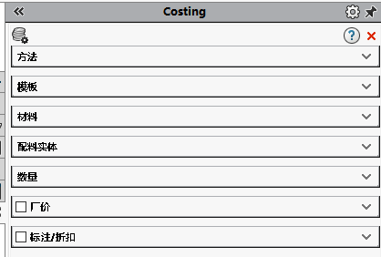（机加 costing 界面）
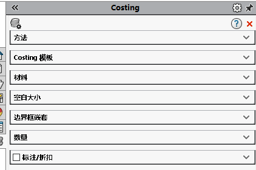钣金模板编辑器
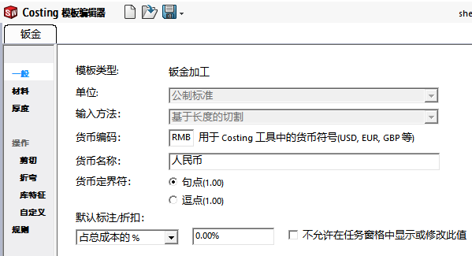材料：
材料选择与 SW 的材质库有关，可以直接选择现有材质库的材料进行添加。
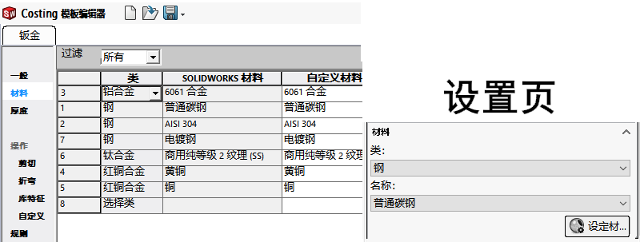
厚度：
在材料基础上添加“厚度”及其“成本”信息；反映到软件使用如下：
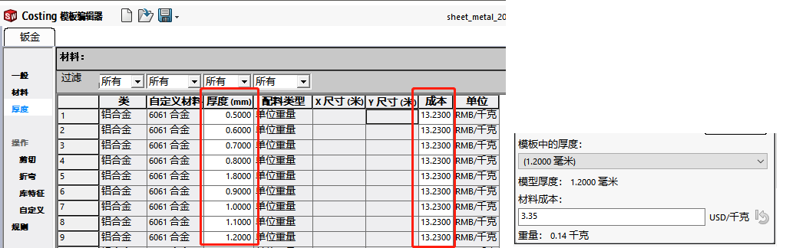
操作：
操作-剪切：
设置切割下料时的成本，包括“切割方法”&“设置成本”（这里我理解是机器的固定成本，如用地用电损耗等）&操作成本。反映到软件使用如下右：
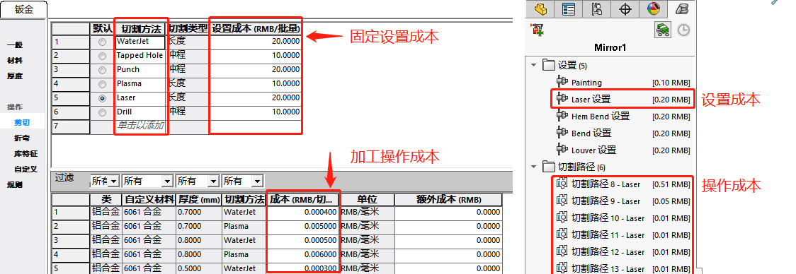操作-折弯：
这里的设置也用上面的“操作-剪切”一样，你需要设置“折弯方法”所对应的“设置成本”和“操作成本”。折弯特征一般有：“折弯”，“褶边”等（下面以折弯Bend做说明）反映到软件使用如下右：
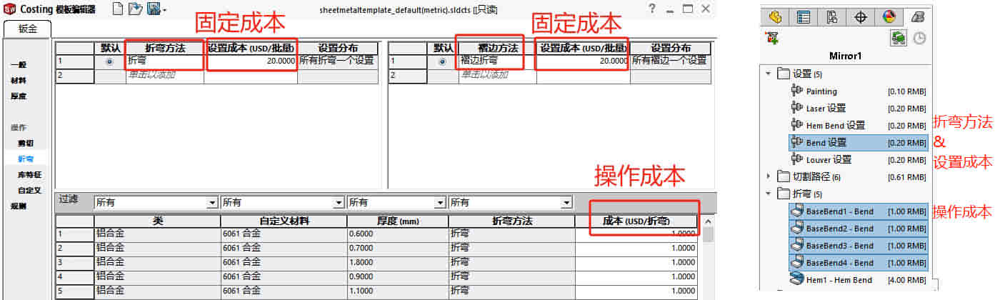操作-库特征：
这里的设置也用上面的“操作-剪切”一样，你需要设置“库特征”“设置成本”“操作成本”。
（这里的库特征要同名）反映到软件使用如下右：
操作-自定义：自定义通常用于非钣金特征的处理操作（例如：表面处理等）。反映到软件使用如下右：
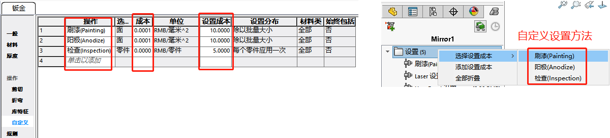机加件模板编辑器
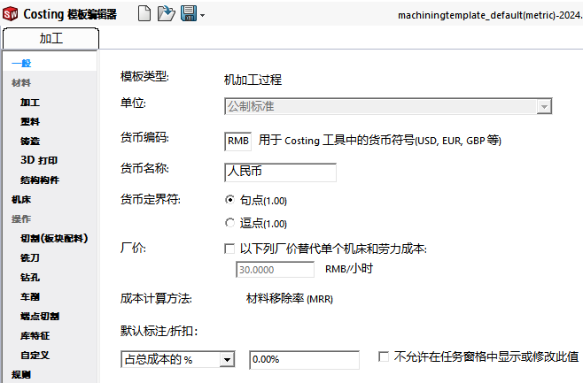材料：
材料选择与 SW 的材质库有关，可以直接选择现有材质库的材料进行添加。
方法
操作：
常规
使用成本计算模板编辑器中的常规屏幕设置单位和货币选项、厂价和表面粗糙度选项。
加工
使用 配料材料 中的加工屏幕设置您使用加工制造方法制造加工零件所需的材料。
塑料
使用 Costing 模板编辑器中的塑料屏幕设置您需要使用塑料制造方法制造精加工零件的材料。
铸造(Casting)
使用 Costing 模板编辑器中的 Costing 屏幕设置您需要使用 Costing 制造方法制造精加工零件的材料。
3D 打印
使用 Costing 模板编辑器中的 3D 打印屏幕设置您需要使用 3D 打印制造方法制造精加工零件的材料。
结构构件
使用 Costing 模板编辑器中的结构构件屏幕设置您需要按拉伸零件制造结构构件的材料。
机床
使用 Costing 模板编辑器中的机床屏幕定义与机加工操作相关的机器和成本。
切割(板块配料)
使用成本计算模板编辑器中的切割（板块配料）屏幕定义从板块配料体制造的零件的切割方法的成本。
碾磨
使用 Costing 模板编辑器中的Costing 模板编辑器屏幕过滤与碾磨操作相关的机器。
钻孔
使用 钻孔中的Costing 模板编辑器屏幕定义与钻孔操作相关的机器。
车削
使用 Costing 模板编辑器中的车削屏幕定义与车削操作相关的机器和成本。
端点切割
使用 Costing 模板编辑器中的端点切割屏幕筛选与焊件中端点切割操作相关的机器。
库特征
使用成本计算模板编辑器中的库特征屏幕定义零件的库特征的成本。
自定义
使用成本计算模板编辑器中的自定义屏幕定义有助于核算零件制造成本的其他操作，例如粉末涂层。
修改机加工零件设置
您可以在机加工模板的机器选项卡中指定机加工零件的设置时间。
将模板备注添加至钻孔、碾磨或车削操作
您可以在机加工模板上为碾磨、钻孔或车削工具添加注释。
父主题机加工模板
查找机加工模板信息的位置更新模板材料成本数据创建新的机加工模板编辑机加工模板
多实体
同装配体类似，多用于焊件多实体的情况。
装配体
装配体的成本计算，归根到底是零件的计算。那么装配体的成本计算模板是参考了两个其他模板，一个针对钣金实体，另一个针对机加工实体。
钣金零件的操作
机加工零件的操作
自定义操作（例如对顶层装配体执行的涂刷操作）
焊接操作
设置操作
购买的零件
Toolbox 零部件
报告：
材料明细表
使用成本属性列的材料明细表BOM
word文件
创建自定义 Costing 报告
示例
机加件
本课程中，将计算从实体块和板状材料制造机加工零件的成本是多少。在本课中，您将学习如何：
• 评估机加工零件的成本
• 使用成本计算评估设计变更
• 更改成本计算输入
• 加入制造减价
• 增加可影响成本的自定义操作
• 比较不同零件材料的成本
• 将库特征添加到零件
• 替代特征成本
• 生成成本计算结果报告
设置文件位置
首先请设置文件位置，以便使用针对本课程的正确模板（默认 SW 模板文件夹位置：“SW 安装程序\lang\Chinese-Simplified Costing templates”，模板文件格式为：sldctm 机加，sldctc 多实体，sldcts 钣金）
估算机加件零件成本
- 打开模型
开启 Costing：（“工具”工具栏或 CommandManager 上的“评估”选项卡）
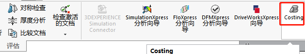（或者单击工具 > SOLIDWORKS 应用程序 > Costing）
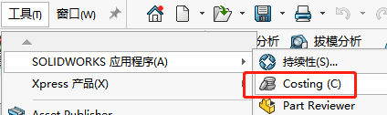- 在 Costing 任务窗格的方法中，选择机加工。 请注意，铸造、塑料和 3D 打印也可用。
- 在 Costing 任务窗格的模板下，选择 machining_tutorial。（成本计算模板中包含您或您的制造供应商将用于制造零件的过程。可在模板中指定如下信息：材料成本与规格、制造工序成本以及制造设置成本）
在 Costing 任务窗格中的材料下：
a. 在类别下选择钢。
b. 将名称设置为普通碳钢。
成本计算工具使用零件中的材料信息估算制造成本。Costing 任务窗格将显示 估计的零件单位成本。
Costing 任务窗格项目 说明
比较 Costing 工具根据模板中的数据和图形区中的零件来计算零件的成本。
分解 成本计算的分解结果指示材料费用和制造（工时、机器运转时间和管理）费用占总成本的一定百分比。
更改模型几何体
接下来将更改模型几何体，以了解对制造成本有何影响。在图形区域中，双击零件。将尺寸从 200 更改为 250，然后单击重建（成本将上升，原因是您为零件增加了材料）。
- 在图形区域中，右键单击直槽口，然后单击压缩。成本将下降，原因是您简化了零件。
（不能在 CostingManager 中压缩槽口，因为 CostingManager 显示的是制造特征，而不是 SOLIDWORKS 特征）
为坯料添加材料
零件表面有时需要较大的公差或特定的表面粗糙度。接下来将在配料体中增加更多材料，以便可以对零件进行精确的机加工，从而满足特定的公差和表面粗糙度。
在机加工成本计算任务窗格中，在配料体下，为 +Y 键入 0.50mm，然后按 Enter。单击单击此更新。
在 SOLIDWORKS 应用程序左侧，名为顶面的新制造特征将显示在铣刀操作文件夹中
（+Y=0.00mm）
（+Y=0.50mm）
设置文件夹
SOLIDWORKS 软件窗口左侧的 CostingManager 显示成本计算工具如何对制造零件所需的每个操作进行分类。 接下来将检查设置文件夹，以便查看各设置成本中包含的操作。在 CostingManager 中，展开设置，设置文件夹包含与制造设置相关联的成本，例如设置机器加工大批量零件。制造零件的每个操作都需要设置成本。共有 3 个设置子文件夹：
o 操作设置
o 自定义设置
o 载入和卸载设置在 操作设置文件夹中，选择设置操作 1 。模型中将高亮显示设置操作 1 中制造的特征。 应将共享同一操作方向的所有特征放在相同设置操作文件夹中。
在操作设置文件夹中选择设置操作 2 。只有一个特征使用此操作方向。
添加设置成本
接下来将为袋套特征的碾磨和钻孔操作添加设置成本。
- 展开操作设置文件夹。
对于每个操作设置，显示的设置成本中不包含用于对零件进行机加工的设备的设置成本。 要制造此零件，需要铣床和钻床。 - 右键单击自定义设置，然后单击 选择设置成本 > 钻孔。
- 右键单击自定义设置，然后单击 选择设置成本 > 碾磨。
（每个零件的估算成本将略微上升，因为成本摊派给了批量中的每个零件）
添加碾磨操作
接下来将优化初始成本计算中未自动包含的项成本估算。
展开碾磨操作。该零件需要执行一个铣刀操作。
选择袋套 1。模型中将突出显示该袋套。展开袋套 1。使用直径为 6mm 平头磨具碾磨该袋套
将光标悬停在平头磨具 - Ø6.00 mm 上方。将显示碾磨操作的成本计算。
添加孔操作
孔操作文件夹中包含有关要在零件中钻出的所有孔的信息。接下来将检查孔操作文件夹，以便查看各设置成本中包含的操作。
- 展开孔操作。有五个需要钻的孔。
- 展开孔 1。这是螺纹孔，需要执行两项操作：钻孔和钻螺纹。
更改材料成本
SOLIDWORKS 软件窗口右侧的 Costing 任务窗格显示用于确定零件制造成本的输入值。 接下来将更改材料成本，以便了解材料成本如何影响制造成本。
Costing 任务窗格中包含 材料 部分。 所有材料信息均源自 Costing 模板。
- 在 Costing 任务窗格的材料下，为材料成本输入 2.50。 按 Enter 键。（重置为模板默认值激活，指明您覆盖了模板中的成本。 此外，每个零件的估算成本下降）
—》改成—》
更改配料体
配料体是零件的制造原材料。接下来将更改配料体，以便了解配料体如何影响制造成本。机加工成本计算中有两种类型的配料体：
选择板。软件将使用切割操作（如水力喷射和激光）来贯穿切割零件，而不是碾磨和钻孔。
（如果选择此配料体，不但可以控制配料，还可以控制从零件去除材料的操作）
软件会选择最接近零件厚度的板厚度。 模板中最厚板的厚度为 25mm，但是零件的厚度为 50mm。 警报图标。说明板材不够厚，所以需要使用块配料在配料体下的类型中，选择块。块通常可以满足所有几何体的需要。软件将选择适合零件的最小矩形立方体。
单击单击此更新
更改要制造的零件数量
接下来将更改要制造的零件数量，以便了解该数量如何影响制造成本。
将零件总数设置为 1，然后按 Enter。估算成本将上升（因为机器设置成本拆分给了批量中的各个零件，每个零件承担的设置成本将增加）
添加减价
接下来将向零件添加减价，以便了解减价如何影响价格。
在涨价/减价下，可为零件应用涨价或减价。如果要增加利润率，请输入正值。如果从供应商处获得了减价，请输入负值。为总成本的 % 输入 -10，然后按 Enter。每个零件的估算成本将下降 10%。
应用自定义操作
接下来将对零件应用自定义操作。由于零件由普通碳钢制成，所以可能生锈，因此您可以以定制操作的形式为零件上涂料。在 CostingManager 中，单击添加自定义操作。涂刷已经作为自定义操作列出。
因为机加工模板中包含涂刷。 PropertyManager 将显示与涂刷操作相关的所有成本信息。零件单位成本将增加，涂刷 <1> - 面操作将显示在自定义操作文件夹中。
（手动自定义操作）
比较材料成本
接下来将设置一个基准价格，用于比较部件的替代材料。
- 在 Costing 任务窗格的估计的零件单位成本下，单击设定基准。在材料下的名称中，选择 AISI 304。
估计的零件单位成本 将上升。由于 AISI 是不锈钢，因此无需涂刷即可防止生锈，所以可以去除涂刷操作。在 CostingManager 中，展开自定义操作。右键单击涂刷 <1> - 面，然后单击移除自定义操作。
添加库特征
接下来将向零件添加库特征，以便了解库特征如何影响价格。
在 FeatureManager 设计树中，右键单击 iso 11926-1 液动端口，然后单击解除压缩零件中将显示库特征。单击单击此更新。每个零件的估算成本 将上升
在 CostingManager 中，展开库特征。将显示库特征。仅当模板中包含库特征的信息时，成本估算中才会包含库特征。可编辑模板，以便加入任何库特征。
应用成本替代
接下来将替代库特征的成本。在 机加工成本计算 任务窗格中的模板下，单击启动模板编辑器。在成本计算模板编辑器中，单击库特征。
成本计算模板编辑器顶部将显示各库特征的设置成本。此模板中已经包含 iso 11926-1 液动端口库特征的成本信息。可在其中添加未识别的库特征的信息。
（另一种编辑机加工模板的方法是在本地使用成本替代项编辑成本。如果在 CostingManager 替代了一项特征成本，即在不更改模板的情况下临时替代了成本） 2. 关闭成本计算模板编辑器。在 CostingManager 中，右键单击 iso 11926-1 液动端口 ，然后单击应用成本替代。删除 4.00，输入 5.00，然后按 Enter。
特征库名称将以“斜体”字体显示，并在成本中带有一个星号，说明替代了模板中的成本。 将更新 机加工成本计算 任务窗格中的每个零件的估算成本。
生成报表
接下来将生成成本计算结果报告。
- 在 Costing 任务窗格底部单击生成报告 。此时会显示报告对话框。
- 选取出版时显示报表。
- 设置其它选项，然后单击发布。
- 关闭报表。
钣金件
在本课程中，将计算制造钣金零件的成本。在本课中，您将学习如何：
• 估算钣金零件成本
• 使用成本计算评估设计变更
• 更改成本计算输入
• 加入制造减价
• 增加可影响成本的自定义操作
• 比较不同零件材料的成本
• 生成成本计算结果报告
接下来打开零件，然后使用 Costing 工具计算成本。
开启 Costing，“工具”工具栏或 CommandManager 上的“评估”选项卡。或者单击工具 > SOLIDWORKS 应用程序 > Costing
在 Costing 任务窗格的方法中，选择钣金。
在 Costing 任务窗格的 Costing 模板下，选择 sheet_metal_tutorial。 （成本计算模板中包含您或您的制造供应商将用于制造零件的过程。可在模板中指定如下信息：材料成本与规格、制造工序成本以及制造设置成本。）
在 Costing 任务窗格中的材料下，确保：
a. 类设置为钢。
b. 名称设置为普通碳钢。在 Costing 任务窗格中的消息下，单击开始成本估算。
Costing 任务窗格将显示 估计的零件单位成本。
Costing 任务窗格项目 说明
比较 成本计算工具根据模板中的数据和图形区中的零件来计算零件的成本。
分解 成本计算的分解结果指示材料费用和制造（工时、机器运转时间和管理）费用占总成本的一定百分比。
更改模型几何体
更改模型几何体，以了解对制造成本有何影响
- 在图形区域中，双击零件。将所示尺寸从 120 更改为 250。（增加材料估算成本将上升）
更改材料的厚度和成本
接下来将更改材料的厚度和成本，以便了解这两者如何影响制造成本。
- 在钣金成本计算任务窗格的材料下模板的厚度中，选择 2.0000 mm。（增加材料估算成本将上升）
添加设置成本
SOLIDWORKS 软件窗口左侧的 CostingManager 显示成本计算工具如何对制造零件所需的每个操作进行分类。 接下来将添加设置成本，以便包含购买的单项。
- 在 CostingManager 中，展开设置，将光标悬停在激光设置上方将显示为零件应用的设置成本部分。
（CostingManager 中的所有成本值都针对单个零件。当前每个批量有 100 个零件，而该机器的设置成本为每个批量 20 美元，所以每个零件的总成本为 0.20 美元。） 2. 右键单击设置，然后单击选择设置成本 > 购买定单项。（每个零件的估算成本将上升，因为设置成本拆分给了输入的总数量中的每个零件）
检查切割路径
接下来将检查 CostingManager，以便了解为制造零件而加入的操作。
展开切割路径：要切割六个激光切割路径。
选择任一切割路径，切割路径将在模型中突出显示。
将光标悬停在切割路径上，将显示该切割路径的成本计算。
展开折弯：共有 4 个折弯操作，并且零件中有一个褶边操作。
展开库特征。
该零件中有两个库特征。仅当模板中包含库特征的信息时，成本估算中才会包含库特征。可编辑模板，以便加入任何库特征。
更改坯件大小
坯件大小是零件的制造原材料的大小。接下来将更改坯件大小，以便了解坯件大小如何影响制造成本。
- 在钣金成本计算任务窗格的坯件大小中，选择在图形区域中预览。
将显示坯件大小的边界框预览。
将偏移设置为 25，然后按 Enter。边界框变大且估算成本上升。
- 将偏移设置为 0，然后按 Enter。
- 清除在图形区域中预览。
更改要制造的零件数量
接下来将更改要制造的零件数量，以便了解该数量如何影响制造成本。 - 将零件总数设置为 1，然后按 Enter。估算成本将上升 （因为机器设置成本拆分给了批量中的各个零件，每个零件承担的设置成本将增加）
添加减价
接下来将向零件添加减价，以便了解减价如何影响价格。 - 在涨价/减价下，可为零件应用涨价或减价。如果要增加利润率，请输入正值。如果从供应商处获得了减价，请输入负值。为总成本的 % 输入 -10，然后按 Enter。每个零件的估算成本将下降 10%。
应用自定义操作
接下来将对零件应用自定义操作。由于零件由普通碳钢制成，所以可能生锈，因此您可以自定义操作的形式对零件进行阳极处理。
在 CostingManager 中，单击添加自定义操作。选择阳极处理。
（阳极处理通常作为自定义操作列出，因为钣金模板中包含阳极处理。 PropertyManager 将显示与阳极处理操作相关的所有成本信息）
（设置成本）
（操作成本）
比较材料成本
阳极处理价格昂贵，但仍然存在生锈问题。可以比较替代材料的成本。接下来将设置一个基准价格，用于比较部件的替代材料。在 Costing 任务窗格的估计的零件单位成本下，单击设定基准。在材料下的名称中，选择 AISI 304
（由于 AISI 是不锈钢可防止生锈，所以可以去除阳极处理操作）
生成报表
接下来将生成成本计算结果报告。在 Costing 任务窗格底部单击生成报告 。此时会显示报告对话框。
选取出版时显示报表。
设置其它选项，然后单击发布。
关闭报表。
Q&A
模板规则定义？
钣金件用机加工方式，加工方法选择：“加工的板块”。
单位不匹配
出现在模型类型所用的模板与模型单位不匹配导致